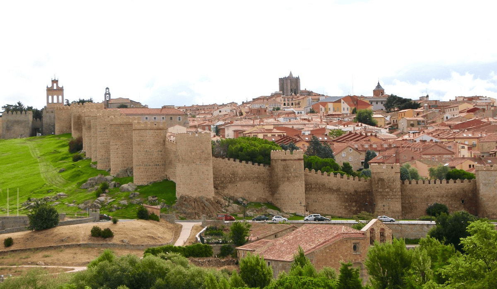
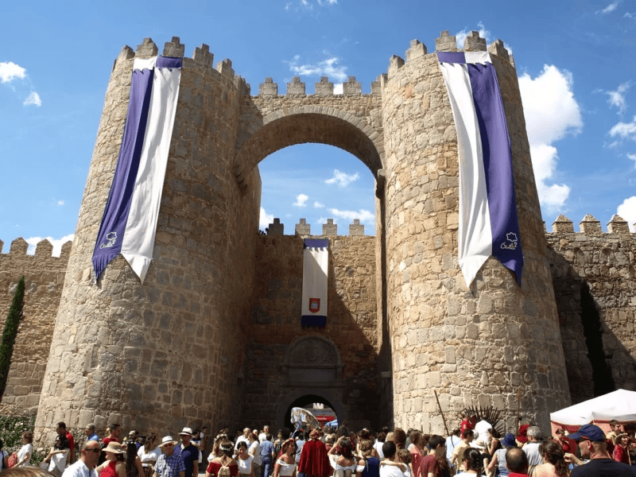
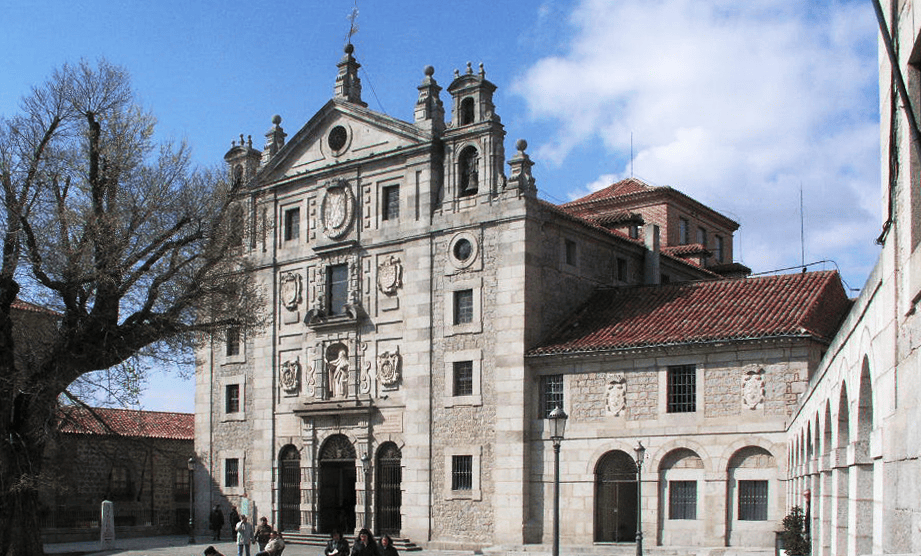

El símbolo inconfundible de Ávila es su muralla. Se ve desde la distancia y convierte a la ciudad en uno de los recintos amurallados mejor conservados de Europa.
En su interior, encontrarás una Ciudad Patrimonio de la Humanidad de calles empedradas, imagen medieval, interesantes iglesias, sabrosa gastronomía y un ambiente sosegado que te ayudará a desconectar.

La muralla y la mística de la ciudad
La icónica muralla de Ávila es visitable con un recorrido de 1.700 metros. Sus vistas a la Catedral, a la plaza del Mercado Grande o a los alrededores de la ciudad bien merecen subir a ella. Esta catedral es considerada la primera catedral gótica de España y se encuentra adosada a la muralla porque fue proyectada también como fortaleza.
El otro símbolo de la ciudad es Santa Teresa de Jesús, presente en cualquier parte de la ciudad, desde las esculturas honoríficas hasta en el dulce más popular de Ávila: las yemas de Santa Teresa. Puedes visitar el Convento de Santa Teresa, situado en la que fuera su casa natal. Junto al convento, se encuentra el Museo de Santa Teresa.El Real Monasterio de Santo Tomás, la basílica de San Vicente o la basílica de San Pedro son también espacios religiosos de interés. Para aprender más sobre la mística y sus personajes en Ávila, es recomendable conocer el Centro de Interpretación de la Mística.

Convento de Santa Teresa
El convento, inaugurado en 1636, fue edificado sobre la casa natal de Santa Teresa de Jesús, y proyectado por el arquitecto Fray Alonso de San José. En la iglesia destaca la fachada, de estilo barroco, y el interior, de planta de cruz latina, cuyas naves laterales albergan magníficas esculturas del maestro Gregorio Fernández.

Museo del Monasterio de la Encarnación
Este recorrido, a través de las evocaciones de Santa Teresa, se enmarca entre un magnífico conjunto de edificios renacentistas, reformados en el siglo XVIII.
Más que un museo, se trata de la visita a los recuerdos de Santa Teresa. En este convento hizo sus votos (1537) y vivió durante 27 años. San Juan de la Cruz también paso allí una temporada, como capellán y confesor. Una de las obras más sobresalientes es un dibujo realizado por el propio santo, que representa a Cristo en la cruz.